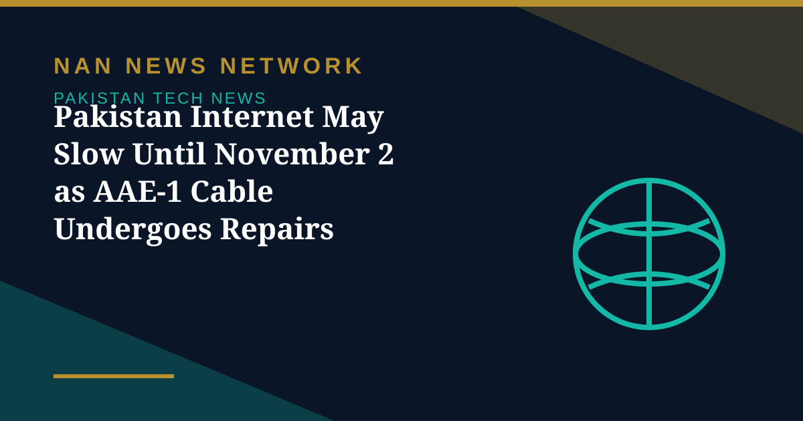

Pakistan Internet May Slow Until November 2 as AAE-1 Cable Undergoes Repairs

Internet users across Pakistan may face slower speeds during peak hours until November 2, 2026, as emergency repairs continue on a major international submarine cable. The Pakistan Telecommunication Company Limited (PTCL) said work is being carried out on the AAE-1 (Asia-Africa-Europe 1) cable, specifically on the section between Italy and France.
Why Europe-hosted sites will feel it most
Because the affected segment lies in Europe, users are most likely to experience slower loading times when accessing websites and services hosted in European countries, particularly during evening peak hours. PTCL said repairs have already started and that users may notice minor service degradation, mainly during busy hours, appealing to customers for patience while the work is under way.
The AAE-1 is one of the most important routes for Pakistan's international internet traffic. Stretching about 25,000 kilometres, it links Southeast Asia to Europe via Egypt and lands in Karachi; PTCL began its Pakistani operations on the cable in 2017. The cable has caused disruption before: in January 2025, a fault near Qatar slowed internet speeds nationwide for nearly two weeks. PTCL has not yet said whether additional backup bandwidth will be provided during the current repairs, and the Pakistan Telecommunication Authority had not responded to requests for comment when the story was filed.
Sources: TechJuice, Profit/Pakistan Today, Daily Pakistan, October 28, 2026
More on Pakistan Tech News
- PM Sets November Deadline for Alibaba-Backed AI and Digitalisation Projects
- Pakistan's 5G Now Reaches 24 Cities After $509 Million Spectrum Auction
- Pakistan Announces Urdu AI Model 'Buraq' to Keep National Data at Home
- PM Launches Two-Year Drive to Give 500,000 Chromebooks to Talented Students
- Pakistan to Host UN Space Technology Conference on Early Warnings and Climate Action
- PAK-US Tech Connect 2026 Takes 16 Pakistani Tech Firms Across America
- Pakistan Wins 11 Awards at the ASOCIO Digital and AI Awards 2026
- Pakistan Showcases AI Innovations at Abu Dhabi's AI Everything Global 2026